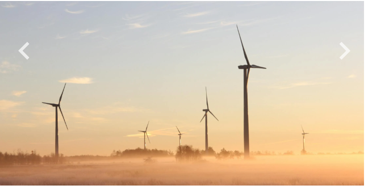

¿Que son las energias limpias?
LAs energias limpias son aquellas que se obtienen de fuentes renovables y que no genran contaminacion durante su uso. Algunas de estas fuentes incluyen las energias solares, eolicas, hidroelectricas y la energia generada a partir del hidrogeno.
Beneficios de las energias limpias
- 📉Reduccion de emision de Co₂
- Disminucion de la contaminacion atmosferica
- Disponibilidad de recursos inagotables como el sol
- Impulso al desarollo de comunidades